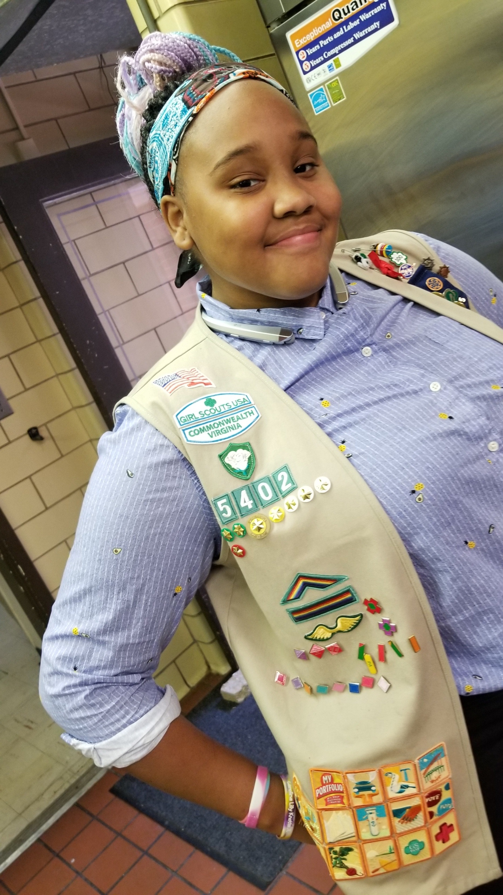
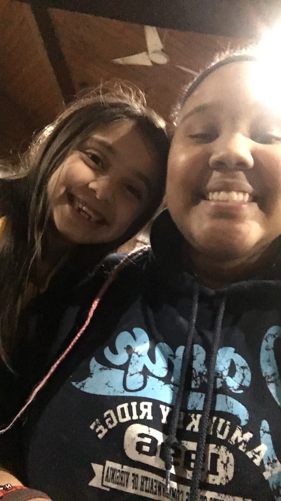
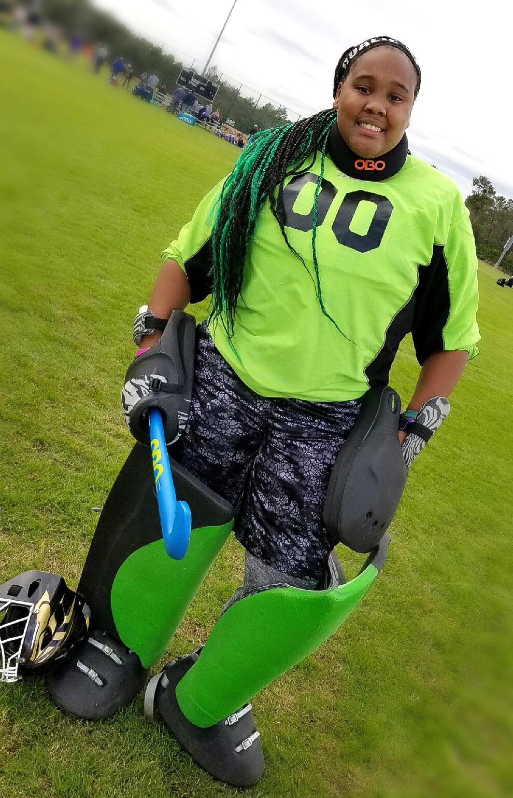

I am 11th grader who lives in the distract of Henrico and use to go to Freeman High School. When I graduate from Coderva I want to join the Miltary for a few years, then I plan to go to Sweet Briar Collage.
I have been in Girl Scout for about 11 years now and love who it's really help me to become. Girl Scout allows people to be honest and true to themseleves and it helps us figure out what turly makes us happy. I say this because over the year I realize that I love to help and take care for people and to be around the people who genuinely make me happy. I also would never have found the amazing group of friends that I have now, and I owe it all to Girl Scouts.
One time my troop and I lead a day of play at a camp called camp Kitty. The girls had a blast and so did we but there was one girl in particular that we just couldn't forget. Her name was Isha and we became instant friends. Sometimes when I go to camp I will see her and we will are alway next to each other. I am just glad that I could make a difference in her life.
I have also been a field hockey goaile for 6 years now. Field hockey at first was just another sport my mother put me in just keep me busy but then I quickly fell in love with it. With in a month a had my first tournment and I told myself this will be my sport now. Field hockey allows me to travel all over the state for tournments and get in close with the collage I want to go to.
